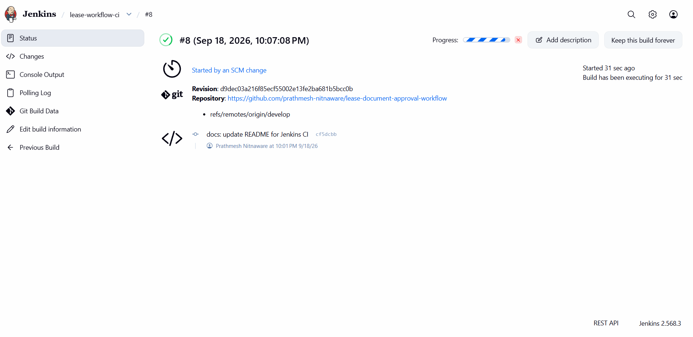
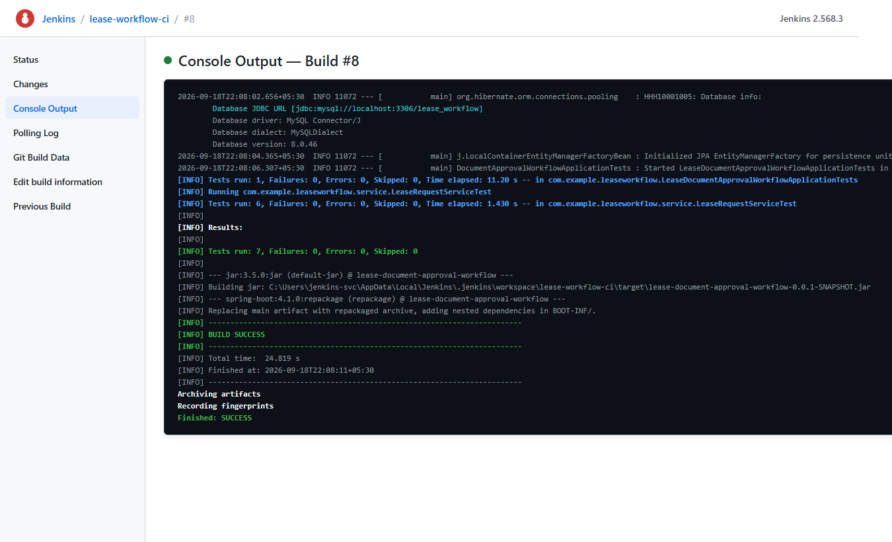
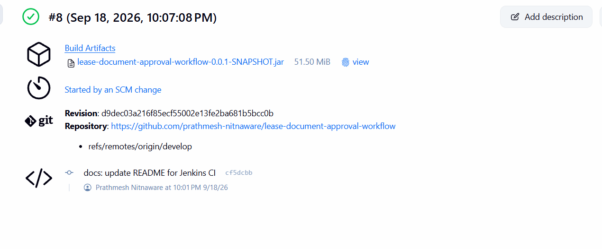

Continuous Integration (CI) is a foundational DevOps engineering practice where software engineers frequently commit code into a shared repository, after which each check-in is verified by an automated build and test runner. The primary objective is to detect integration issues and software bugs early, improve release quality, and accelerate software delivery pipelines.
In this Week 7 practical assignment, an automated Continuous Integration pipeline was implemented for the Lease Document Approval Workflow application using Jenkins. The application is built using Java 21, Spring Boot, Spring Data JPA, and Apache Maven, with relational data persistence provided by a local MySQL database. A dedicated Jenkins Freestyle project named lease-workflow-ci was configured to automatically monitor the remote repository's develop branch, trigger builds upon detecting source code changes via SCM polling, compile the Java codebase, execute automated tests with database connectivity, package the application into a Spring Boot executable JAR, and archive the resulting binary as a build artifact.
The implementation fulfilled the following specific practical objectives:
develop branch to automatically initiate builds without manual triggering.lease_workflow) using connection pooling (HikariCP).The CI environment was built on a dedicated Windows controller using the exact specifications detailed below:
| Component | Identifier / Value | Version | Role in Pipeline |
|---|---|---|---|
| Project | Lease Document Approval Workflow | 0.0.1-SNAPSHOT | Core Spring Boot application under test |
| Repository | lease-document-approval-workflow | Git | Remote repository on GitHub |
| Monitored Branch | develop | N/A | Primary branch for integration testing |
| CI Server | Jenkins (Freestyle Project) | 2.568.3 | Automation controller |
| Jenkins Job | lease-workflow-ci | Freestyle | Continuous integration build job |
| Java Development Kit | OpenJDK / HotSpot 64-Bit | 21.0.11 | Application runtime and compilation engine |
| Build Tool | Apache Maven | 3.9.16 | Build and dependency management |
| Git Plugin | git | 5.10.1 | Jenkins Git SCM integration |
| Git Client Plugin | git-client | 6.6.1 | Git command-line interface provider |
| GitHub Plugin | github | 1.47.0 | GitHub repository management plugin |
| GitHub API Plugin | github-api | 1.330-492.v3941a_032db_2a_ | GitHub REST API communication library |
| Maven Integration Plugin | maven-plugin | 3.27 | Maven lifecycle runner for Jenkins |
| Database Server | MySQL Community Server | 8.0.46 | Relational backend (schema: lease_workflow) |
Jenkins version 2.568.3 runs locally on port 8080 under the dedicated service account jenkins-svc. The job workspace is situated at C:\Users\jenkins-svc\AppData\Local\Jenkins\.jenkins\workspace\lease-workflow-ci.
The job is linked to the GitHub repository using Git SCM:
https://github.com/prathmesh-nitnaware/lease-document-approval-workflowgithub-pat*/developTo detect changes pushed or merged to the remote repository, SCM polling was configured with the cron schedule:
H/5 * * * *Jenkins polls GitHub approximately every 5 minutes. The hash syntax (H) distributes system load evenly across time, ensuring that the controller periodically checks git ls-remote on refs/heads/develop and automatically schedules a build when a new commit hash is detected.
To provide the database password without hardcoding it in scripts, Jenkins's built-in credential manager was used under Build Environment → "Use secret text(s) or file(s)":
mysql-db-passwordDB_PASSWORDSecurity Justification: Injecting secrets dynamically via Jenkins ensures that production/database passwords never exist in plaintext within the repository, protecting systems against unauthorized credential harvesting.
Under Build Steps, an Execute Windows batch command step was configured to supply Spring datasource properties dynamically before running Maven:
set SPRING_DATASOURCE_URL=jdbc:mysql://localhost:3306/lease_workflow
set SPRING_DATASOURCE_USERNAME=root
set SPRING_DATASOURCE_PASSWORD=%DB_PASSWORD%
mvn clean package
if %ERRORLEVEL% NEQ 0 exit /b %ERRORLEVEL%This script binds the Spring Boot application directly to the local MySQL schema, initiates compilation and testing, and halts immediately if Maven returns an error code.
Under Post-build Actions, Archive the artifacts was configured to archive target/*.jar with fingerprinting enabled, registering an MD5 checksum of the generated Spring Boot JAR for auditing and traceability.
To prevent credentials from leaking into Git, application-local.yml was explicitly added to .gitignore. Three verification checks were executed via Git CLI:
git ls-files src\main\resources\application-local.yml — returned no output (file is not tracked).git log --all -- src/main/resources/application-local.yml — returned no output (file was never committed in Git history).git check-ignore -v src\main\resources\application-local.yml — output confirmed:
.gitignore:27:application-local.yml src/main/resources/application-local.ymlThis proves that credentials remain strictly outside version control, with all secrets supplied at runtime via Jenkins credentials.
The successful execution of Build #8 verified the complete automated CI pipeline:
refs/heads/develop.Started by an SCM change.develop branch was checked out at commit d9dec03.lease_workflow.Finished: SUCCESS in 24.819 seconds.The automated test suite comprised 7 JUnit tests across two test suites. All seven tests executed and passed successfully with zero failures, zero errors, and zero skipped tests:
| Test Suite Class | Tests Run | Failures | Errors | Skipped | Time Elapsed | Status |
|---|---|---|---|---|---|---|
com.example.leaseworkflow.LeaseDocumentApprovalWorkflowApplicationTests |
1 | 0 | 0 | 0 | 11.20 s | PASSED |
com.example.leaseworkflow.service.LeaseRequestServiceTest |
6 | 0 | 0 | 0 | 1.430 s | PASSED |
| Total Test Summary | 7 | 0 | 0 | 0 | 12.63 s | ALL PASSED |
The Jenkins console output confirmed:
[INFO] Results:
[INFO]
[INFO] Tests run: 7, Failures: 0, Errors: 0, Skipped: 0
[INFO]
[INFO] BUILD SUCCESS
Archiving artifacts
Recording fingerprints
Finished: SUCCESSThe Spring Boot application context bootstrapped Spring Data JPA and Hibernate ORM against the local MySQL instance. The Jenkins console output verified active connectivity:
2026-09-18T22:08:02.656+05:30 INFO 11072 --- [ main] org.hibernate.orm.connections.pooling : HHH10001005: Database info:
Database JDBC URL [jdbc:mysql://localhost:3306/lease_workflow]
Database driver: MySQL Connector/J
Database dialect: MySQLDialect
Database version: 8.0.46
Default catalog/schema: lease_workflow/undefined
Autocommit mode: undefined/unknown
Isolation level: REPEATABLE_READ [default REPEATABLE_READ]
JDBC fetch size: none
Pool: DataSourceConnectionProviderHikariCP logged HikariPool-1 - Added connection and HikariPool-1 - Start completed, demonstrating that the CI test environment authenticated and connected to MySQL without exposing credentials.
To verify automated SCM triggering without manual build invocation:
docs: update README for Jenkins CI.develop is protected, the commit was pushed to temporary branch ci/scm-polling-test and merged via Pull Request #8 into develop.d9dec03a216f85ecf55002e13fe2ba681b5bcc0b within 5 minutes.Started by an SCM change.During the package phase, the spring-boot-maven-plugin assembled the standalone executable JAR:
lease-document-approval-workflow-0.0.1-SNAPSHOT.jar51.50 MiB (54,001,084 bytes)C:\Users\jenkins-svc\AppData\Local\Jenkins\.jenkins\jobs\lease-workflow-ci\builds\8\archive\targetJenkins successfully verified and archived the packaged JAR as a permanent build artifact.

d9dec03, and commit message "docs: update README for Jenkins CI".

Tests run: 7, Failures: 0, Errors: 0, Skipped: 0), packaging, Maven BUILD SUCCESS, artifact archiving, and final SUCCESS status.

lease-document-approval-workflow-0.0.1-SNAPSHOT.jar, 51.50 MiB). The dashboard also confirms the automated SCM trigger source.
| Technology | Version | Category / Role |
|---|---|---|
| Jenkins | 2.568.3 | Continuous Integration Automation Server |
| Java / JDK | 21.0.11 | Runtime Environment & Compilation Target |
| Apache Maven | 3.9.16 | Build Lifecycle & Dependency Management |
| Git Plugin | 5.10.1 | Jenkins Git SCM Integration |
| Git Client Plugin | 6.6.1 | Low-Level Git CLI Abstraction |
| GitHub Plugin | 1.47.0 | GitHub Integration & Webhooks |
| GitHub API Plugin | 1.330-492.v3941a_032db_2a_ | GitHub REST API Client Library |
| Maven Integration Plugin | 3.27 | Jenkins Native Maven Support |
| MySQL Server | 8.0.46 | Relational Database Engine |
| Hibernate ORM | 7.4.1.Final | JPA Persistence Provider |
Cause: application-local.yml was ignored by Git to protect sensitive passwords. Consequently, the fresh Jenkins checkout lacked database credentials, causing the Spring Boot test context to fail.
Solution: Database configuration was supplied dynamically through Jenkins build-level environment variables (SPRING_DATASOURCE_URL, SPRING_DATASOURCE_USERNAME) combined with a securely stored Jenkins Secret Text credential (mysql-db-password exposed as %DB_PASSWORD%).
Cause: The initially configured MySQL password was incorrect during preliminary setup.
Solution: The database credentials were verified and corrected in the Jenkins Secret Text credential store, enabling seamless authentication.
Cause: The GitHub repository enforces branch protection on develop, rejecting direct command-line pushes.
Solution: A separate branch (ci/scm-polling-test) was created, the commit was pushed there, and Pull Request #8 was submitted and merged into develop. Jenkins SCM polling automatically detected the merge.
Factual Outcome: The Jenkins Freestyle CI job lease-workflow-ci successfully:
develop branch from GitHub.lease_workflow (version 8.0.46).lease-document-approval-workflow-0.0.1-SNAPSHOT.jar (51.50 MiB) with fingerprinting.Finished: SUCCESS in 24.819 seconds.The Week 7 DevOps practical successfully demonstrated the implementation and verification of an automated Continuous Integration pipeline using Jenkins Freestyle Project. By establishing SCM polling on GitHub's develop branch, enforcing zero test failures, securing credentials outside Git, and automatically archiving validated deployable artifacts, the project achieved a robust, hands-on CI workflow aligned with professional DevOps practices.